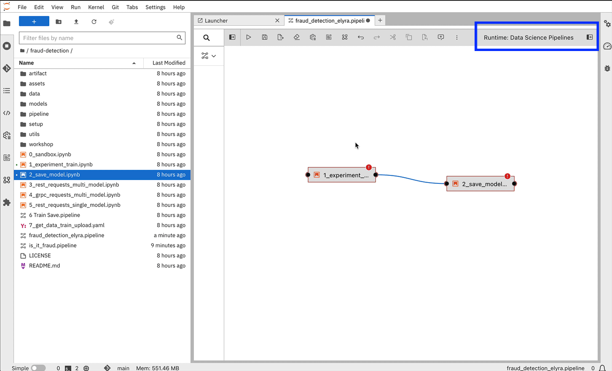
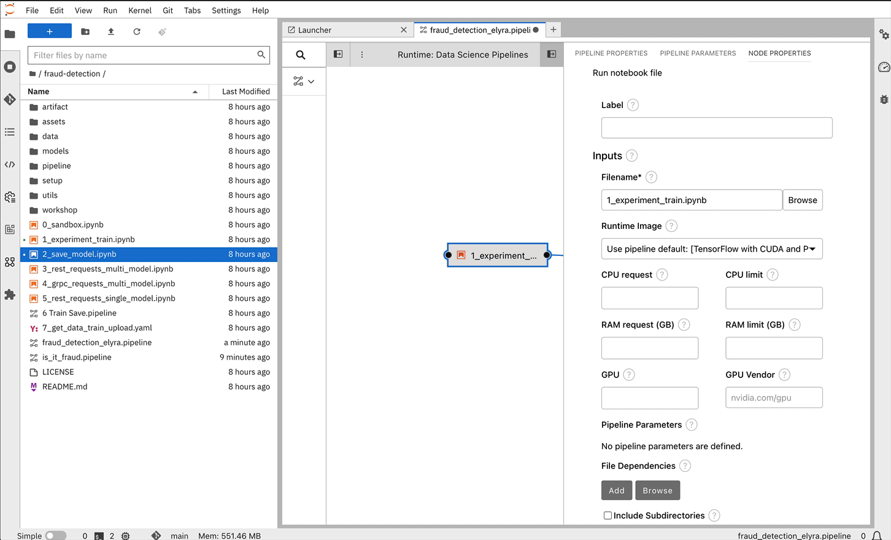

Elyra Pipelines
Elyra Runtime Configuration in Jupyter Notebooks
In OpenShift AI, you can manage runtime configurations using the JupyterLab UI.
A runtime configuration provides Elyra access to the Data Science Pipelines backend for scalable pipeline execution.
| The runtime configuration is included and is pre-configured for submitting pipelines to Data Science Pipelines only when the pipeline server is created in the project before the workbench is created. |

If the pipeline server is deployed post workbench creation, the runtime configuration will not appear in Jupyter notebooks and there are two options to establish the pipeline.
-
Make a change to the workbench by adding an irrelevant environment variable (recommended)
-
Manually create the runtime configuration
-
you will need the following required fields:
-
Runtime: Display Name
-
Data Science Pipelines API Endpoint: found in the Network / Routes section of the OCP Dashboard
-
Data Science Pipeline Engine Type: Argo (pre-configured)
-
Cloud Object Storage Endpoint: S3 compatible storage (same as data connection endpoint)
-
Cloud Object Storage Bucket Name: Name of the S3 bucket
-
Data Storage User Credentials: Credentials to the S3 endpoint
-
-
Refer to the Elyra documentation for more information about Elyra and the available runtime configuration options.
Creating a Data Science Pipeline with Elyra
In order to create Elyra pipelines with the visual pipeline editor:
-
Launch JupyterLab with the Elyra extension installed.
-
select a workbench/notebook image with Elyra installed
-
-
Create a new pipeline by clicking on the Elyra
Pipeline Editoricon. -
Add each node to the pipeline by dragging and dropping notebooks or scripts from the file browser onto the pipeline editor canvas.
-
Connect the nodes to define the flow of execution.
-
Configure each node by right-clicking on it, clicking 'Open Properties', and setting the appropriate runtime image and file dependencies.
-
You can also inject environment variables, and secrets, and define output files.
-
Once the pipeline is complete, you can submit it to the Data Science Pipelines engine.
Working with Elyra
Let’s now use Elyra to package the nodes into a pipeline and submit it to the Data Science Pipelines backend in order to:
-
Rely on the pipeline scheduler to manage the pipeline execution without having to depend on my workbench session.
-
Keep track of the pipeline execution along with the previous executions.
-
Be able to control resource usage of individual pipeline tasks in a fine-grained manner.
Review opening JupyterLab
Once the fraud-detection workbench has successfully started, we will begin the process of exploring and building our pipeline.
-
Ensure that the
fraud-detectionworkbench is in aRunningstate. Click theOpenlink on the far right of the workbench menu. Log in to the workbench as theadminuser. If you are running the workbench for the first time, clickAllow selected permissionsin theAuthorize Accesspage to open the Jupyter Notebook interface.
Lab Exercise: Building the Pipeline
-
Click on the
Pipeline Editortile in the launcher menu. This opens up Elyra’s visual pipeline editor. You will use the visual pipeline editor to drag-and-drop files from the file browser onto the canvas area. These files then define the individual tasks of your pipeline. -
Rename the pipeline file to
fraud-detection-elyra.pipeline: Right-click the untitled pipeline name, choose rename, and then select `Save Pipelinein the top toolbar. -
Drag the
experiment_train.ipynbnotebook onto the empty canvas. This will allow the pipeline to ingest the data we want to classify, pre-process the data, train a model, and run a sample test to validate that the model is working as intended. -
Next, drag the
save_model.ipynbnotebook onto the canvas, to the right ofexperiment_train.ipynbnode. -
Connect the
Output Port(right black dot of the task icon) of theexperiment_traintask with theInput Port(left black dot of the task icon) of thesave_modeltask by drawing a line between these ports (click, hold & draw, release).You should now see the two nodes connected through a solid line. We have now defined a simple pipeline with two tasks, which are executed sequentially, first experiment_train to produce a model artifact, and then save-model to move the model to workbench S3 storage.
By visually defining pipeline tasks and connections, we can define graphs spanning many task nodes and interconnections. Elyra and Data Science Pipelines support the creation and execution of arbitrary directed acyclic graphs (DAGs), i.e. graphs with a sequential order of nodes and without loops.
We have now created the final graph representation of the fraud detection pipeline using the two of five available notebooks. With this, we have fully defined the pipeline code and its order of execution.
Configuring the pipeline
Before we can submit our pipeline, we have to configure the pipeline to:
-
Set the dependencies for each task, i.e. the corresponding runtime images
-
Configure how data is passed between the tasks
-
Configure the S3 credentials as environment variables during runtime
-
Optionally, configure the available compute resources per task
Set the Runtime
Do not select any of the nodes in the canvas when you open the panel. You will see the PIPELINE PROPERTIES tab only when none of the nodes are selected. Click anywhere on the canvas and then open the panel.
|
-
Next, we will configure this runtime image to be used by our pipeline. Open the pipeline settings in the Elyra pipeline editor via
Open Panelin the top right corner of the editor. -
Scroll down to
Generic Node Defaultsand click on the drop down menu ofRuntime Image. Select theTensorFlow with Cuda and Python 3.9 (UBI)runtime image.
Set File Dependencies and Outputs
-
Next, we will configure the data to be passed between the nodes. Click on the
experiment_trainnode. If you’re still in the configuration menu, you should now see theNODE PROPERTIEStab. If not, right-click on the node and selectOpen Properties. -
Under
Runtime ImageandKubernetes Secrets, you can see that the global pipeline settings are used by default. -
In the
File Dependenciessection, you can declare one or more input files. These input files are consumed by this pipeline task as the data needed to train the model. -
Under file dependencies click add, then select browse and choose the data/card_transdata.csv file which provides a sampling of credit card transaction data to be used to train the model.
-
In the
Outputssection, you can declare one or more output files. These output files are created by this pipeline task and are made available to all subsequent tasks. -
Click
Addin theOutputssection and inputmodels/fraud/1/model.onnx. This ensures that the downloaded model artifact is available to downstream tasks, including thesave_modelstask.
|
By default, all files within a containerized task are removed after its execution, so declaring files explicitly as output files is one way to ensure that they can be reused in downstream tasks. Output files are automatically managed by Data Science Pipelines, and stored in the S3 bucket we configured when setting up the DataSciencePipelineApplication. |
Set Kubernetes Secrets for Storage Access
-
Click on the
save_modelnode. Then select the open panel to view the "Node Properties" configuration panel. If not, right-click on the node and selectOpen Properties. -
Next, we will configure the data connection to the
my-storagebucket as a Kubernetes secret.-
By default, these secrets are created in the environment variable section in pipeline properties
-
They need to be located in the Kubernetes secrets section of pipeline properties.
-
-
In the
NODE PROPERTIESsection, clickAddbeneath theKubernetes Secretssection and add the following five entries:-
AWS_ACCESS_KEY_ID -
AWS_SECRET_ACCESS_KEY -
AWS_S3_ENDPOINT -
AWS_S3_BUCKET -
AWS_DEFAULT_REGION
Each Kubernetes Secret parameter will include the following options:
-
Environment Variable: the parameter name -
Secret Name:aws-connection-my-storage(the name of the Kubernetes secret belonging to the data connection) -
Secret Key: the parameter name

The AWS default region is another parameter in the data connection, which is used for AWS S3-based connections. My experience is that if this field is missing the pipeline will fail to connect regardless of the storage system used.
-
There should now be 5 entries under kubernetes secrets, each of the entries under environment variables should be removed.
Set Outputs file for Save_Model task
-
Next, we will configure the data to be passed between the nodes. If you’re still in the configuration menu, scroll to the Outputs section of the
NODE PROPERTIEStab. If not, right-click on the node and selectOpen Propertiesbefore performing this step. -
Click
Addin theOutputssection. In the field insert:models/fraud/1/model.onnx. This ensures that the model artifact will be saved to the S3 storage location.-
This is the same output file input that was set for the experiment_train task.
-
-
Save the pipeline
|
It is possible to declare the data volumes as a global pipeline property for simplicity. However, this prevents parallel execution of model loading and data ingestion/preprocessing since data volumes can only be used by a single task by default. |
Running the pipeline
We have now fully created and configured the pipeline, so let’s now see it in action!
-
In the visual editor, click on the Play icon (
Run Pipeline). -
Leave the default pipeline name and runtime configuration and click OK.
-
In a minute or so, a job submission to the data science pipeline status window will appear.
-
Succeed messages will provide links to run details in the RHOAI dashboards and a link to the S3 storage location where pipeline artifacts are stored.
-
Before moving on, submit the same pipeline again with the same configuration a second time. This will generate a new version of the pipeline and kick off an additional run.
| You can manage incremental changes to pipelines in OpenShift AI by using versioning. This allows you to develop and deploy pipelines iteratively, preserving a record of your changes. You can track and manage your changes on the OpenShift AI dashboard, allowing you to schedule and execute runs against all available versions of your pipeline. |
|
If you configure the pipeline server after you have created a workbench and specified a notebook image within the workbench, you will not be able to execute the pipeline, even after restarting the notebook. To solve this problem:
|
Pipeline execution
Elyra is now converting your pipeline definition into a YAML representation and sending it to the Data Science Pipelines backend. After a few seconds, you should see confirmation that the pipeline has been successfully submitted.
To monitor the pipeline’s execution, click on the Run Details link, which takes you to the pipeline run view within the RHOAI dashboard. Here you can track in real-time how each pipeline task is processed and whether it fails or resolves successfully.
To confirm that the pipeline has indeed produced fraud detection scoring results, view the content of the pipeline storage bucket. In the folder for the fraud-detection-elyra folder, there will be two HTML files that show the status of each of the task executions.
Navigate back to the Experiment and Runs overview in the RHOAI dashboard. Click the fraud-detection-elyra experiment to see the history of all ongoing and previous pipeline executions of the same name and compare their run durations and status.
In the Scheduled tab you’re able to view runs of the fraud-detection-elyra pipeline according to a predefined schedule such as daily or according to a Cron statement.
|
Pipeline versioning implemented in Data Science Pipelines. If you change or submit an Elyra pipeline that you have already submitted before, a new version is automatically created and executed. |
Tracking the pipeline artifacts
Let’s finally peek behind the scenes and inspect the S3 bucket that Elyra and Data Science Pipelines use to store the pipeline artifacts.

-
View the contents of the
data-science-pipelinesbucket, which we referenced through thepipelinesdata connection. You can see three types of folders:-
pipelines: A folder used by Data Science Pipelines to store all pipeline definitions in YAML format. -
artifacts: A folder used by Data Science Pipelines to store the metadata of each pipeline task for each pipeline run. -
A folder for each pipeline run with name
[pipeline-name]-[timestamp]. These folders are managed by Elyra and contain all file dependencies, log files, and output files of each task.
-
|
The logs from the Pipeline submitted by Elyra will show generic task information and logs, including showing the execution of our python files as a subtask. Log details from our code are not recorded in the pipeline logs. To view logs from the execution of our code, you can find the log files from our tasks in the runs in the Data Science Pipelines bucket. |
Now that we have seen how to work with Data Science Pipelines through Elyra, let’s take a closer look at the Kubeflow Pipelines SDK.